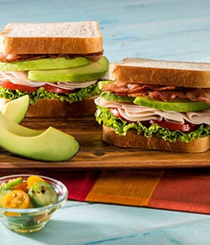

Baja Club Sandwich

Description
Indulge in our signature Baja club sandwich, layered with succulent roasted turkey, crispy bacon, and fresh lettuce. Topped with creamy avocado slices for a rich, buttery flavor, this savory delight is finished with ripe tomatoes and a zesty mayo spread, all nestled between toasted artisan bread. Served with a side of hand-cut fries, it's the perfect balance of crunch and creaminess in every bite!
Ingredients
- 2 slices of whole grain or sourdough bread
- 4 oz of roasted turkey breast
- 2 strips of crispy bacon
- 1/2 slice of ripe avocado
- 1 cup of fresh romaine lettuce
- 1 medium sliced tomato
- 2 Tb of mayo
- salt and pepper to taste
Steps
- Cook the bacon: In a sillet over medium heat, cook the bacon until crispy. Drain on paper towels and set aside.
- Prepare the bread: Toast the slices of bread until golden brown. This adds texture and prevents sogginess.
- Spread the mayo: Spread a tablespoon of mayonnaise on one side of each slice of toasted bread.
- Add it all together: add all the ingredients from turkey, lettuce, bacon, tomato, and avocado, bottom up.